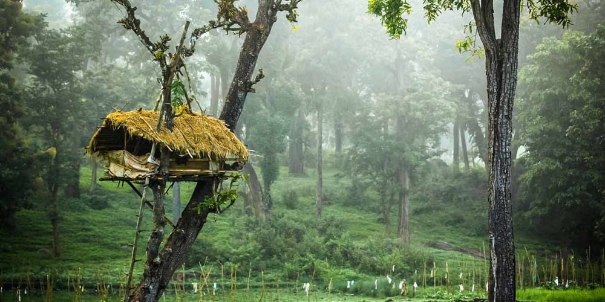
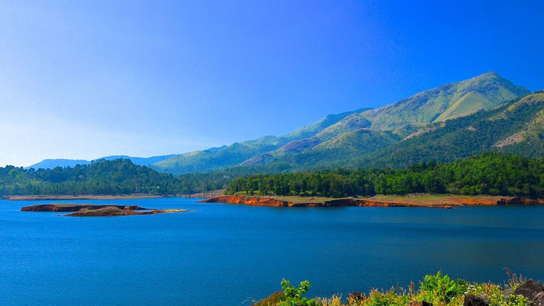

Wayanad

Wayanad District came into existence on 1st November, 1980 as the 12th District of Kerala consisting of Mananthavady, Sulthanbathery and Vythiri Taluks. The name Wayanad is derived from Vayal Nadu which means the land of paddy fields. It is a picturesque plateau situated at a height between 700 meters and 2100 meters above the mean sea level nested among the mountains of the Western Ghats on the Eastern portion of North Kerala and on the sides of Tamil Nadu and Karnataka States.
Hot Tourist Spots
Chembra Peak

Banasura Sagar Dam
